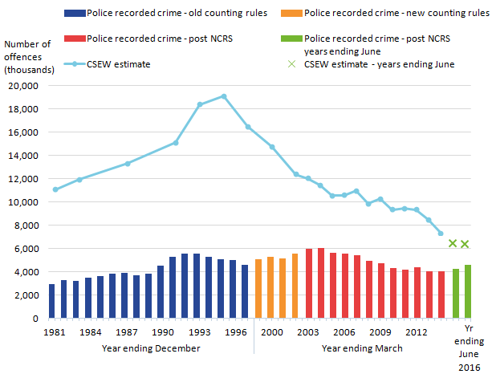
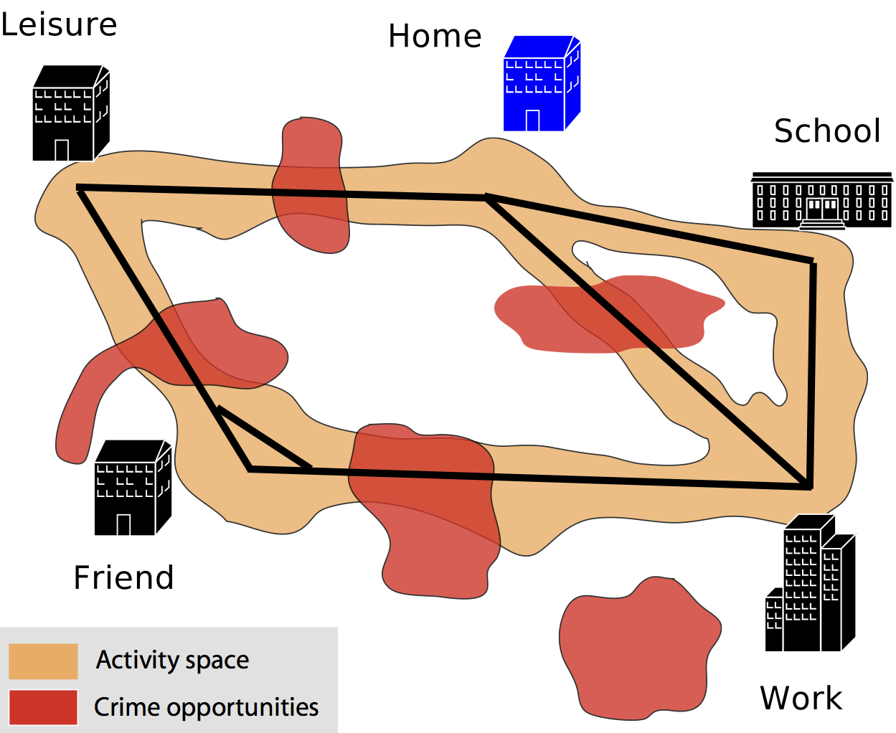
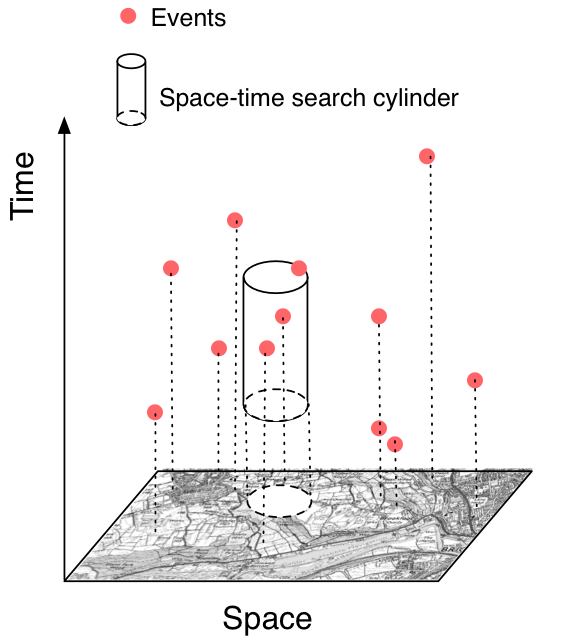
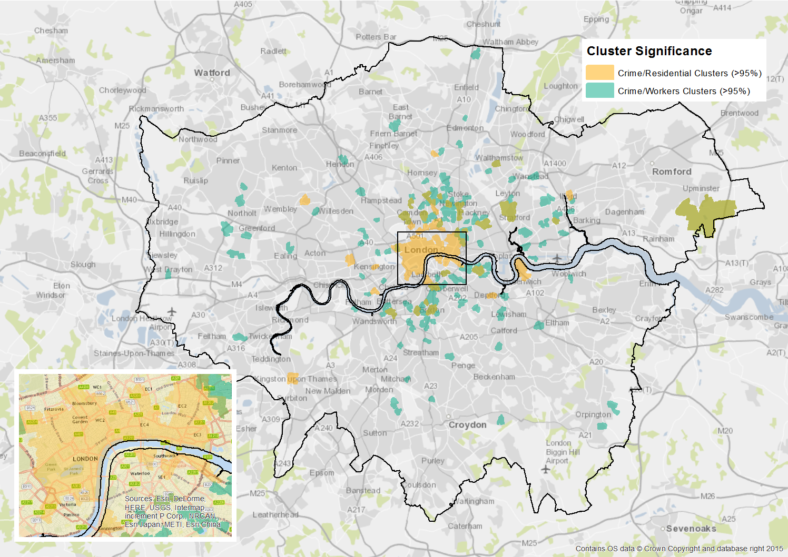
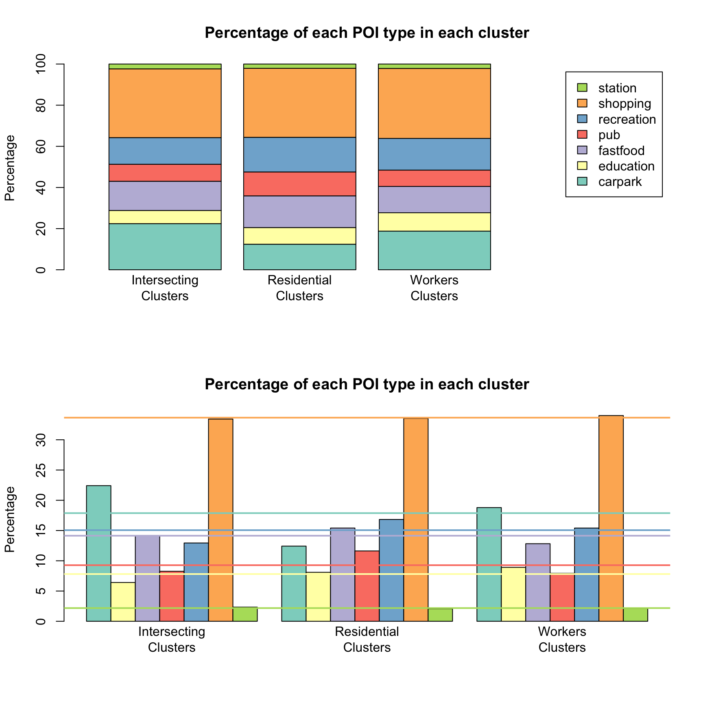
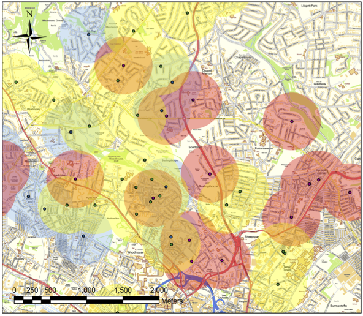

Crime Mapping, Crime Predictors, and Crime Simulation
Nick Malleson
School of Geography, University of Leeds
nickmalleson.co.uk
These slides: http://surf.leeds.ac.uk/presentations.html
Crime Research in Leeds

N8 PRP
A collaboration between the N8 (8 research-intensive universities in the north of England), 12 police forces, and others
Policing Data Analytics
Support data sharing, analysis and use
Current focus: more efficient data requests, acquisition, and police-academia collaborations
Overview
Crime Data & Mapping
Visualising concentrations of local crime
Measuring the Ambient Population and Evaluating Different Crime Predictors
Predictive Policing
Predicting concentrations of local crime
Agent-Based Crime Modelling
Crime Data
Police Recorded Crime
All crimes that are reported to the police and subsequently recorded
They are no longer 'official statistics' (UK Statistics Authority)
"Police recorded crime is not currently considered a reliable measure of trends in crime for most crime types, since it is prone to changes in recording practices and police activity (for example, a proactive operation on weapons’ offences) as well as changing behaviour in public reporting of crime. As a result, trends will not always reflect changing levels of criminal activity. (Crime in England & Wales, Year Ending 2016).
Crime Data
Crime Survey for England and Wales (CSEW)
Large yearly victim survey
Much more reliable national picture, but poor local geography
Other Useful Data

Ordnance Survey MasterMap
Open Street Map
Census
Administrative boundaries
'Big' data (Twitter, loyalty cards, mobile phones, CCTV, etc.)
The Geography of Crime
Crime Mapping and Spatial Analysis

(Most) crime has an important spatial component
"Hotspots" - areas with a significant volume of crime in comparison to surrounding areas
Maps help to visualise and understand the spatial distribution
Often more informative than data tables
Particularly for understanding local crime distributions
But need to be used with care!
Crime Mapping Methods
Kernel Density Estimation (KDE)
Calculate the density of points at each location in a spatial grid
Use a kernel to assign greater weight to closer points
Parameters:
kernel function
kernel radius
cell size
Crime Mapping Methods
Getis & Ord GI*
Area based - compares number/rate of crime to neighbours
Main advantage: provides a test for significance
Overview
Crime Data & Mapping
Visualising concentrations of local crime
Measuring the Ambient Population and Evaluating Different Crime Predictors
Predictive Policing
Predicting concentrations of local crime
Agent-Based Crime Modelling
Quantifying the Ambient population
What is the most appropriate denominator for crime rate calculations?
Residential population is the most common
But not always appropriate
Daily flows of people radically alter urban characteristics
Difficult to quantify hotspot severity without good population at risk estimates
Surprisingly poor data to quantify mobile populations
Substantial impact on crime rates (Andresen and Jenion, 2010; Felson and Boivin, 2015; Stults and Hasbrouck, 2015).
The 'Age of Big Data'

Explosion in data volume.
'Datafication' of hitherto private thoughts/actions.
Proliferation of GPS-enabled devices
Opportunity to better understand urban flows
Urban Flow Data
Social Media


Urban Flow Data
Mobile Communications
Large population coverage

Private, unknown methodology, privacy concerns, coarse resolution (?)

Urban Flow Data
Geo-Apps
Smart-phone apps that capture movement / location are becoming ubiquitous
Great potential for understanding (some) urban dynamics
Examples of Crime Research using the Ambient Population ...
Spatio-Temporal Dynamics
Violent Crime Hotspots with Twitter Ambient Population
Data
Twitter (proxy for ambient population)
Violent Crime
Space-Time Scan Statistics
Move a cylinder over the data
Vary height and radius
Identify significant clusters given the ambient population

Spatio-Temporal Dynamics
Violent Crime Hotspots with Twitter Ambient Population
Find clusters with significant crime given the ambient population
Two particularly interesting clusters:
Saturday 10:00 - 17:00
Saturday 21:00 - 02:00 (Sunday)
Ambient Population & Environment
Aims
1. Find the most suitable data set for measuring the ambient population
2. Find different types of crime hotspot and examine physical surroundings
Crime: Theft from Person
Ambient Population & Environment
Data overview
Census data (residential and ambient)
Aggregate mobile phone counts
Population 24/7 estimates (census-based)
Ambient Population & Environment
Results
Two rates:
Crime per residential population
Crime per workday population
Getis-Ord GI* - significant crime clusters
City centre hotspot disappears under ambient population
Some similarities in North London (rates similar regardless of denominator)
New clusters further out
Ambient Population & Environment
Points of Interest
In West London hotspots: High crime, low ambient population
Impact of environmental factors
Few generators (tube stations, music venues, pubs, schools, etc.) but lots of attractors?
Only small differences.
Ambient clusters have fewer restaurants, recreation buildings, and pubs. (Many more car parks / garages).
Inconclusive - more research needed
Overview
Crime Data & Mapping
Visualising concentrations of local crime
Measuring the Ambient Population and Evaluating Different Crime Predictors
Predictive Policing
Predicting concentrations of local crime
Agent-Based Crime Modelling
Predictive Policing
Previous examples good for understanding crime and surrounding context
But not as good for (short term) crime prediction
Predictive policing:
usage of mathematical, predictive and analytical techniques in law enforcement to identify potential criminal activity. (Wikipedia)
A few examples:
Trafford Model / Operation Optimal
Street network models
PredPol
Operation Optimal
Theory - Near Repeat Hypothesis
Risk of burglary doubles after a victimisation, then rapidly decays with time
Due to:
Offender confidence
Similar building design
Also elevated risk for neighbours
This can be used to estimate high-risk neighbourhoods for short term
Operation Optimal
Method
Collect last three weeks of crime data
Draw x meter buffer around each crime
Colour depending on the week and make 30% transparent
Identify areas with at least one crime per week for three weeks (in orange)
High presence in orange areas.
Very successful in Leeds & Manchester, less successful in Bradford
Street Network Models
Recognition that street network layout is extremely important for offenders
Rosser et al. (2016): a combination of self-exciting point process (SEPP) approach applied to street networks
Background crime level (longer term)
Short-term increases due to new crimes that dissipate over time
Overview
Crime Data & Mapping
Visualising concentrations of local crime
Measuring the Ambient Population and Evaluating Different Crime Predictors
Predictive Policing
Predicting concentrations of local crime
Agent-Based Crime Modelling
For desert:
Agent-Based Modelling (ABM)

Create an urban (or other) environment in a computer model.
Stock it with buildings, roads, houses, etc.
Create individuals to represent offenders, victims, guardians.
Give them backgrounds and drivers.
See what happens.
ABM Example - Burglary
Agent-Based Modelling - Appeal
Modelling complexity, non-linearity, emergence
Natural description of a system
Bridge between verbal theories and mathematical models
Produces a history of the evolution of the system
Agent-Based Modelling

Both!
Difficulties:
Stochasticity
Computationally expensive (not amenable to optimisation)
Complicated agent decisions
Lots of decisions!
Multiple model runs (robustness)
Modelling "soft" human factors
Need detailed, high-resolution, individual-level data
ABM Explanatory Example (Birks 2012)

Explanatory: exploring theory
Randomly generated abstract environments
Theoretical 'switches'
Rational choice perspective
Routine activity theory
Geometric theory of crime

Validation against stylized facts:
Spatial crime concentration
Repeat victimisation
Journey to crime curve
ABM Predictive Example
Predictive: exploring the real world
ABM to explore the impacts of real-world policies
Urban regeneration in Leeds

ABM Predictive Example

ABM Burglary Results
Ethical Implications

This is not minority report!
We can't (and wouldn't want to!) predict when/where/who will commit a crime.
We have a role to set the boundaries on what is ethically acceptable
Dynamic simulation models have great potential, we need to make the case that they can be used responsibly
Particularly relevant in the 'big data' / 'smart cities' era
Predictive Intelligent Policing
This is not predictive policing
It could be, in the future, maybe, but not yet
This is a useful tool for exploring the crime system.
It might lead to a better understanding of:
How different behavioural characteristics (offender, victim, or guardian) influence crime outcomes
How the physical infrastructure can be organised to discourage crime
How patrol routes might be most effective in circumstances
Etc.
Summary
Crime Data & Mapping
Visualising concentrations of local crime
Measuring the Ambient Population and Evaluating Different Crime Predictors
Predictive Policing
Predicting concentrations of local crime
Agent-Based Crime Modelling
Crime Mapping, Crime Predictors, and Crime Simulation
Nick Malleson
School of Geography, University of Leeds
nickmalleson.co.uk
These slides: http://surf.leeds.ac.uk/presentations.html
References
Andresen, M. A., and Jenion, G. W. (2010). Ambient populations and the calculation of crime rates and risk. Security Journal, 23, 114–133.
Beckx, C., L. Int Panis, T. Arentze, D. Janssens, R. Torfs, S. Broekx, and G. Wets (2009). A dynamic activity-based population modelling approach to evaluate exposure to air pollution: Methods and appli- cation to a Dutch urban area. Environmental Impact Assessment Review 29(3), 179–185.
Felson, M., and Newton, A. (2015). Crime patterns in time and space: The dynamics of crime opportunities in Urban areas. Special issue. Crime Science, 4.
Nyhan, M., Sobolevsky, S., Kang, C., Robinson, P., Corti, A., Szell, M., Streets, D., Lu, Z., Britter, R., Barrett, S.R.H., Ratti, C., (2016). Predicting vehicular emissions in high spatial resolution using pervasively measured transportation data and microscopic emissions model. Atmospheric Environment -. doi:http://dx.doi.org/10.1016/j.atmosenv.2016.06.018
Setton, E., J. D. Marshall, M. Brauer, K. R. Lundquist, P. Hystad, P. Keller, and D. Cloutier-Fisher (2011). The impact of daily mobility on exposure to tra ic-related air pollution and health e ect estimates. Journal of Exposure Science and Environmental Epidemiology 21(1), 42–48.
Stults, B. J., and Hasbrouck, M. (2015). The effect of commuting on city-level crime rates. Journal of Quantitative Criminology, 31, 331–350.
Ward, J., A. Evans, N. Malleson (2016) Dynamic calibration of agent-based models using data assimilation. Royal Society Open Science. 3:150703. (open access)
Yoo, E.-H., Rudra, C., Glasgow, M., Mu, L., 2015. Geospatial Estimation of Individual Exposure to Air Pollutants: Moving From Static Monitoring to Activity-Based Dynamic Exposure Assessment. Annals of the Association of American Geographers.